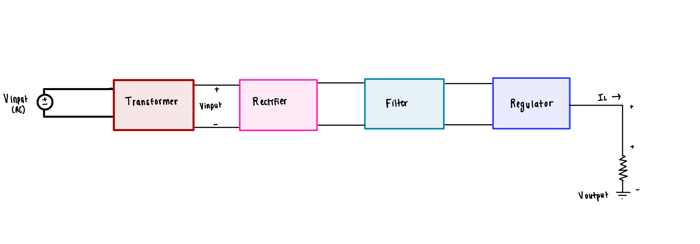
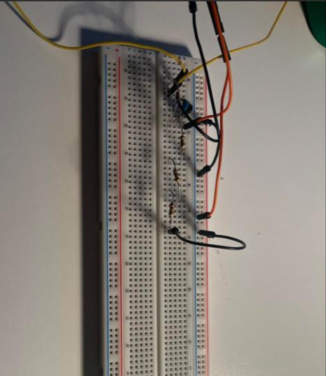
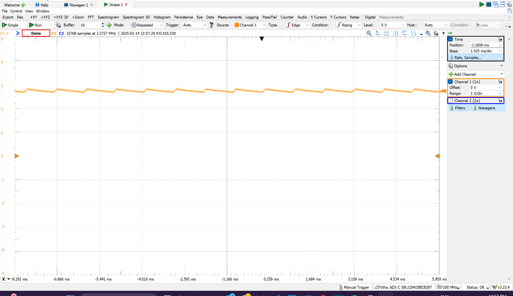

Project
AC to DC Converter
A DC supply delivering 10 mA at 3 V ±0.1 V from a 120 V (rms) 1 kHz input.
What I did
- Built a center-tapped full-wave rectifier with a filter capacitor.
- Simulated and measured output regulation.
- Verified the design held up against diode drops and capacitor tolerances.
Result
Regulation held within tolerance despite diode drops and capacitor tolerances.


